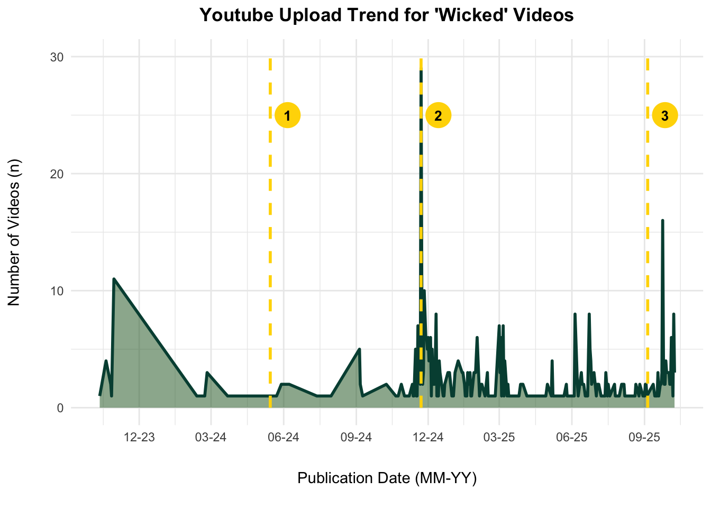
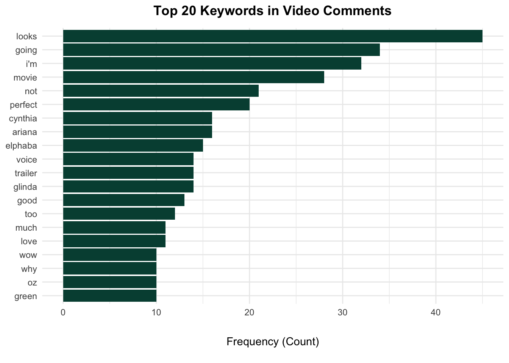
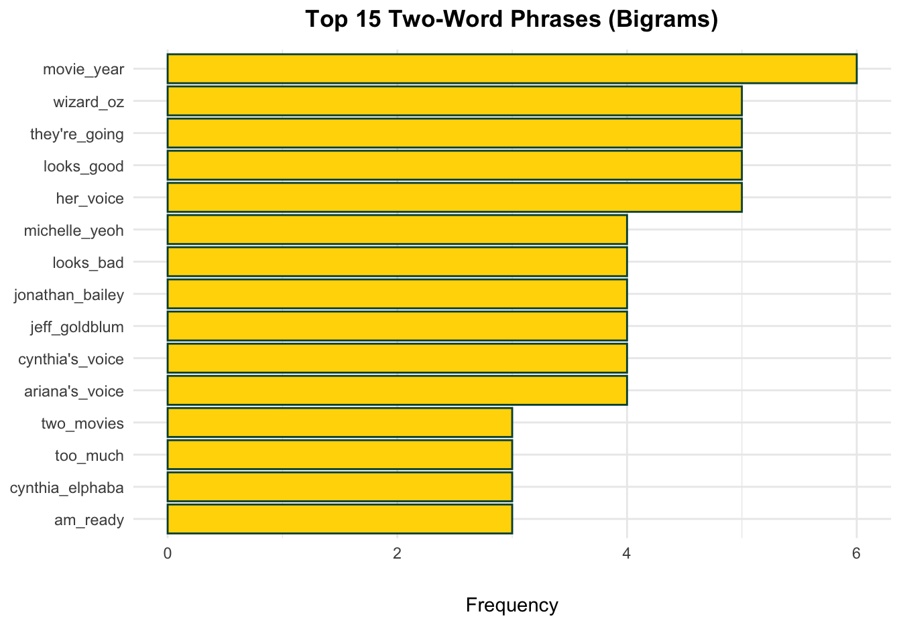

library(tuber)
library(tidyverse)
library(lubridate)
library(stringi)
library(wordcloud)
library(tm)
library(quanteda)
library(quanteda.textstats)
library(quanteda.textplots)
library(ggplot2)
library(zoo)
library(DT)
library(svglite)Project Overview
This assignment analyzes the YouTube conversation surrounding the ‘Wicked’ movie using the tuber and quanteda R packages. The goal is to:
Search for videos related to “Wicked” published between October 2023 and October 2025.
Extract video metadata, including titles, publication dates, and channels.
Visualize data trends, including a cumulative publication timeline correlated with trailer releases and a breakdown of top content-creating channels.
Perform an in-depth text analysis of comments from a specific popular video (YPCqTI0PVV0) to find top keywords, bigrams, and trigrams.
1. Collecting ‘Wicked’ Video Data
Run YouTubenews01.R (prerequisites: YouTube developer API)
The code first authenticates the YouTube API (Oauth code omitted). Then, it searches for up to 500 videos using the term “Wicked” within a specified date range.
print(subset_video_data)
## # A tibble: 500 × 4
## video_id channelTitle title publishedAt
## <chr> <chr> <chr> <dttm>
## 1 R2Xubj7lazE Universal Pictures Wicked: For Good | Fi… 2025-09-24 12:15:30
## 2 amgPXKrFZVg Wicked: For Good Wicked | What Is This… 2024-11-22 16:15:27
## 3 qeqj5GnoFUY Republic Records Defying Gravity (From… 2024-11-22 05:00:42
## 4 vt98AlBDI9Y Universal Pictures Wicked: For Good | Of… 2025-06-05 00:55:09
## 5 5znZFJWSZ7o Higher Quality Uploads Defying Gravity | Wic… 2025-03-05 18:58:36
## 6 9zyPT0a7sx0 Movieclips Wicked (2024) 4K - Th… 2025-03-01 14:00:15
## 7 qemetmTzkeE Film Aesthetics Defying Gravity by Cy… 2025-03-08 18:38:41
## 8 mhKCRnUKp5U THEBLACKLABEL ALLDAY PROJECT - ‘WIC… 2025-06-23 09:01:03
## 9 6COmYeLsz4c Universal Pictures Wicked - Official Tra… 2024-05-15 15:00:29
## 10 kmnBhZ9AZhg Levi Plaifha No One Mourns The Wic… 2025-02-14 01:56:09
## # ℹ 490 more rows2. Analyzing Video Publication Trend
This plot shows the cumulative growth of video uploads over time. This method clearly visualizes the impact of major marketing events on content creation.

3. Top YT Posting Channels
The top 10 channels with the highest number of videos in our search results are visualized in a themed bar chart.

4. YT Comment Analysis
We now dive deeper into a single video, “Wicked | First Look” (ID: YPCqTI0PVV0), to analyze audience reception by processing its comments.

4. N-Gram Analysis
This analysis reveals common multi-word phrases (bigrams and trigrams) to provide context beyond single keywords and identify specific themes expressed by the audience.


Discussion:
Assignment Reflection:
This analysis successfully turned a simple data pull into a clear story about public anticipation. By pairing the “when” of video metadata with the “what” of comment analysis, we got a pretty sharp picture of the ‘Wicked’ hype machine.
The most striking takeaway is from the publication trend plot. The conversation was basically dormant and then exploded the very moment official trailers were released. It’s a stark visualization of how modern marketing events don’t just contribute to the conversation; they practically create it from scratch.
So, what was everyone talking about? The comment analysis (Figure 3) leaves no doubt: the cast. The charts are completely dominated by “Ariana,” “Grande,” “Cynthia,” and “Erivo.” But the n-gram analysis (Figures 4 and 5) tells the real story. The top phrases weren’t just names; they were “singing live” and “ariana grande singing.” This is a fantastic insight. It shows the audience wasn’t just idly chatting about the stars; they were intensely focused on the authenticity of their vocal performances. This was clearly the #1 topic of interest and debate for the community.
Combined with the “Top Channels” data, which shows a healthy mix of official promotion and organic fan commentary, the data paints a clear picture: official marketing provides the spark, but the fire of the hype is fueled by a very specific public debate about the cast’s performance.